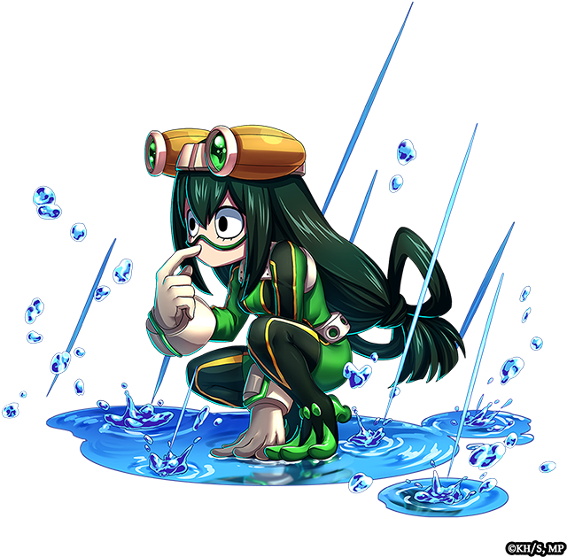

Tsuyu Asui
Nome de Herói: Froppy
Individualidade: Frog – Pode fazer qualquer coisa que um sapo faz: saltar longas distâncias, esticar a língua por metros, camuflar-se e secretar um muco levemente tóxico.
Perfil:
Racional, calma e altamente observadora. É considerada o esteio emocional da turma porque mantém a cabeça fria mesmo nas piores crises.